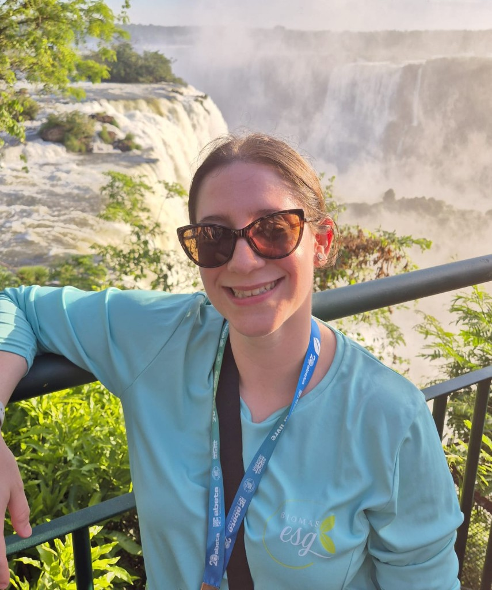

Hora social
Condições especiais para PMEs — consultoria acessível com impacto real.

Impacto Consciente
“Transforme seu negócio com práticas sustentáveis e lucrativas.”
Consultoria ESG com foco em pequenas e médias empresas.


Por que a BIOMAS
Condições especiais para PMEs — consultoria acessível com impacto real.
Diagnóstico e plano sob medida para o contexto da sua empresa.
Posicionamento claro: metodologia pensada para pequenas e médias empresas.
ESG para PMEs
Benefícios concretos que fortalecem o negócio hoje e preparam o futuro.

Descubra como a sua empresa pode crescer com responsabilidade e impacto positivo.

Sobre nós
Impulsionar a transformação sustentável, engajando empresas na criação de experiências que gerem valor ambiental, social e emocional para as pessoas.
Transformar empresas em um motor de desenvolvimento socioeconômico, cocriando soluções criativas e acessíveis em empresas comprometidas com a ética, a sustentabilidade e o bem-estar das pessoas.
Ser reconhecida como agente transformador, capacitando pessoas e empresas para um futuro sustentável, inclusivo e consciente.
Nós unimos técnica, propósito e visão sistêmica para transformar negócios em agentes de impacto positivo — com sustentabilidade, ética e inovação no centro da estratégia.
Equipe

Camila é uma exploradora nata: apaixonada por viagens, observadora de aves e entusiasta de culturas e paisagens naturais. Engenheira Civil formada desde 2008, construiu uma sólida carreira nas áreas industriais e comerciais, com destaque para seus 11 anos de atuação no setor metroferroviário.
Sua jornada em sustentabilidade começou em 2011, com uma pós-graduação em Gestão Ambiental, evoluindo para um MBA em ESG (Environmental, Social and Governance) e diversas formações complementares em temas como Economia Circular, Energy Zero, Construções Sustentáveis, Gestão de Riscos, Portfólio e Design de Futuro.
Camila une técnica e propósito, conectando sua vivência profissional com uma visão sistêmica e ética para transformar o turismo e os negócios em experiências mais sustentáveis, inclusivas e regenerativas.

Yara é movida pela curiosidade e pelo respeito: uma admiradora da diversidade de histórias, culturas e perspectivas, que combina sua paixão pelo novo com uma reverência pelas tradições. Advogada corporativa com mais de uma década de atuação, é especialista em Direito Empresarial, Startups e Governança Corporativa.
Com uma trajetória sólida no mercado financeiro e uma atuação marcante no ecossistema empreendedor, Yara domina a arte de transformar ideias em negócios viáveis. Atua estrategicamente em todas as fases do ciclo de vida empresarial, oferecendo soluções jurídicas personalizadas, alinhadas às necessidades e à identidade de cada negócio.
Seu olhar técnico é complementado por uma escuta ativa e uma visão sistêmica, tornando-a uma parceira essencial na construção de empresas resilientes, éticas e inovadoras.
Serviços
Do diagnóstico à comunicação estratégica, guiamos sua empresa em cada passo rumo à sustentabilidade. Metodologia desenvolvida para PMEs que desejam integrar práticas ESG de forma acessível, prática e com impacto real.
Jornada flexível e personalizada — Acreditamos que toda empresa pode evoluir com responsabilidade.
Entenda onde sua empresa está e para onde pode ir.
Iniciamos com uma análise completa da maturidade ESG da sua empresa. Avaliamos práticas existentes, identificamos riscos e oportunidades, e construímos um retrato fiel do seu ponto de partida.
Transformamos intenções em ações concretas.
Com base no diagnóstico, elaboramos um plano de ação ESG alinhado aos objetivos da empresa. Definimos metas realistas, prazos e responsáveis, sempre respeitando o contexto operacional e financeiro da organização.
Estruturas sob medida para PMEs.
Desenhamos a estrutura de governança ESG sob medida para pequenas e médias empresas, com regras claras, processos ágeis e alinhamento com as boas práticas do mercado.
Ética, transparência e confiança.
Implementamos pilares de integridade que reforçam a ética, a transparência e a confiança, com foco em compliance acessível e aplicável ao dia a dia das PMEs.
ESG como parte da cultura empresarial.
Capacitamos líderes e equipes para aplicar o ESG no dia a dia da empresa, com treinamentos práticos, linguagem acessível e foco nos desafios reais das pequenas e médias empresas. Programas personalizados para transformar conhecimento em ação e cultura em resultado.
Foco no que realmente importa.
Identificamos os temas ESG mais relevantes para sua empresa e seus públicos de interesse. A matriz de materialidade orienta decisões estratégicas e garante que os esforços estejam direcionados ao que gera mais valor.
O que não se mede, não se melhora.
Estabelecemos indicadores claros e objetivos para acompanhar o desempenho ESG da empresa. Criamos ferramentas simples para monitoramento e relatórios que facilitam a tomada de decisão.
Relacionamentos que fortalecem o negócio.
Mapeamos os principais públicos da empresa e desenvolvemos estratégias de engajamento. Promover diálogo e transparência é essencial para construir confiança e gerar valor compartilhado.
Antecipar riscos é proteger o futuro.
Identificamos riscos ambientais, sociais e de governança que podem impactar a operação, reputação ou sustentabilidade da empresa. Propomos medidas de mitigação e integração com a gestão de riscos corporativa.
Conte sua história com propósito e transparência.
Ajudamos sua empresa a comunicar suas ações e resultados ESG de forma estratégica, clara e inspiradora. Isso fortalece a reputação, engaja colaboradores e atrai clientes e investidores conscientes.
Conteúdo
Perguntas frequentes
É o acompanhamento especializado para integrar práticas ambientais, sociais e de governança de forma acessível, alinhada ao tamanho e à realidade da sua empresa.
Condições especiais de atendimento para pequenas e médias empresas. Entre em contato para conhecer os detalhes.
Agende uma conversa gratuita pelo formulário, WhatsApp ou e-mail na aba Contato.
Escolha como prefere falar conosco
Atendimento rápido para tirar dúvidas sobre consultoria ESG para PMEs.
(11) 97387-7359
Abrir conversa no WhatsAppPreencha o formulário abaixo (demonstração — no Wix, use o formulário nativo).